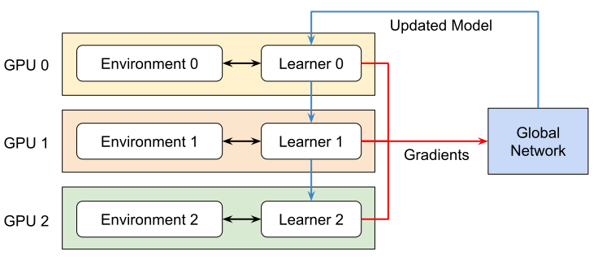
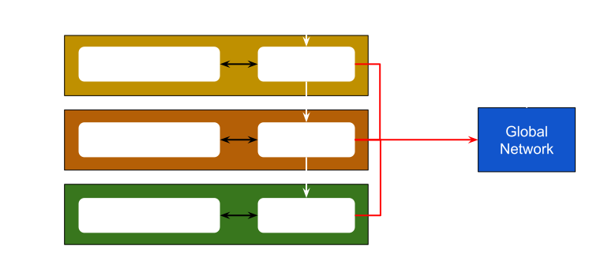

多 GPU 和多节点训练#
通过 train_multigpu ，可将一个强化学习作业扩展到工作站的多个 GPU 或多个节点。Isaac Lab 为每个 GPU 启动一个训练进程，各进程拥有自己的仿真环境，并在进程间同步策略更新。
同一种启动方式也用于三种多 GPU 基准测试，分别测量启动、仿真和端到端训练性能。
注意
多 GPU 和多节点训练需要 Linux 及 NVIDIA NCCL，不支持 Windows。
警告
train_multigpu 属于实验性功能，后续版本可能变化。
启动多 GPU 训练#
先验证任务能否在单个 GPU 上训练，以区分任务/配置问题与分布式启动问题：
uv run isaaclab train --task Isaac-Cartpole
然后在所有可见 GPU 上运行同一任务：
uv run isaaclab train_multigpu --task Isaac-Cartpole
这就完成了从单 GPU 运行的切换。 train_multigpu 自动添加 --distributed ，并选择分布式启动器。其他参数与 train 接受的参数相同：
uv run isaaclab train_multigpu \
--task Isaac-Reorient-KukaAllegro \
--num_envs 4096 \
--max_iterations 100
--num_envs 是 每个 GPU 上的 环境数量。使用四个 GPU 和 --num_envs 4096 时，作业总共从 16,384 个环境采集经验。
所有 rank 写入同一个运行目录。各 rank 在自己的 GPU 上训练，种子为启动种子加自身 rank。rank 0 将设置（ params/env.yaml 和 params/agent.yaml ）及视频写入与单 GPU 运行相同的位置；其余 rank 将自己的 params/ 和视频写入 rank_<rank>/ 。
小技巧
加入 --dry_run 可打印解析后的启动命令，而不开始训练，适合检查 GPU 数量、会合选项和转发的训练参数。
选择 GPU#
启动器默认使用所有可见 GPU。需要指定工作进程数量时，设置 --num_gpus ：
uv run isaaclab train_multigpu --num_gpus 2 --task Isaac-Cartpole
使用 CUDA_VISIBLE_DEVICES 选择物理设备，启动器只能看到列表中的设备：
CUDA_VISIBLE_DEVICES=1,3 uv run isaaclab train_multigpu \
--num_gpus 2 --task Isaac-Cartpole
启动前运行 nvidia-smi ，确认预期设备可用且有足够空闲显存。
选择强化学习库#
多 GPU 训练支持 RSL-RL、RL-Games 和 skrl。大多数核心任务默认使用 RSL-RL。
库 |
分布式后端 |
命令 |
|---|---|---|
RSL-RL |
PyTorch |
|
RL-Games |
PyTorch |
|
skrl |
PyTorch |
|
skrl |
JAX |
|
skrl 使用 JAX 时采用 skrl 的分布式启动器，而非 torchrun 。请为 --num_gpus 传入整数，并通过 --coordinator_address 配置协调器：
uv run --extra skrl-jax isaaclab train_multigpu \
--rl_library skrl --ml_framework jax --num_gpus 4 \
--coordinator_address localhost:5000 \
--task Isaac-Cartpole
通过三种多 GPU 基准测试测量扩展性#
如果目标是测量性能，而非训练供后续使用的策略，请使用基准测试命令。Isaac Lab 提供三种多 GPU 工作流程：
基准测试 |
测量内容 |
可回答的问题 |
|---|---|---|
|
所有 GPU 同时启动相同负载时，rank 0 的启动时间。 |
满负载节点如何影响启动？ |
|
各 GPU 独立运行时，rank 0 的仿真吞吐量。 |
主机资源竞争如何影响环境步进？ |
|
所有 rank 全局同步的训练吞吐量。 |
端到端学习在多 GPU 上的扩展效果如何？ |
运行各基准测试时，使用与 train_multigpu 相同的启动选项：
uv run isaaclab benchmark startup_multigpu \
--num_gpus 2 --task Isaac-Cartpole
uv run isaaclab benchmark runtime_multigpu \
--num_gpus 2 --task Isaac-Cartpole --num_envs 4096
uv run isaaclab benchmark training_multigpu \
--rl_library rsl_rl --num_gpus 2 \
--task Isaac-Cartpole --num_envs 4096 --max_iterations 100
training_multigpu 支持基于 PyTorch 的 RSL-RL、RL-Games 和 skrl，不支持基于 JAX 的 skrl 或 SB3。它也不接受 --video 和 --capture_env_sensors ，因为这些选项不能产生有意义的跨 rank 汇总结果。RSL-RL 和 RL-Games 支持 --check_success ：成功指标在全部 rank 的环境中取平均，使所有 rank 在同一迭代停止。
多节点基准测试中，在每个节点传入 跨节点训练 所述的 --nnodes 、 --node_rank 和会合选项。
读取多 GPU 基准测试结果#
只有全局 rank 0 写出结果包。 extra 字段记录 rank 布局，并说明结果包覆盖的测量范围：
|
含义 |
|---|---|
|
作业的 rank 布局。 |
|
每个 rank 承载的环境数量。 |
|
|
|
|
|
|
比较单 GPU 和多 GPU 时，保持 每个 rank 的 --num_envs 不变。在相同逐 rank 设置下，N 个 GPU 的作业处理的环境数为单 GPU 作业的 N 倍。应将 training_multigpu 的全局吞吐量与单 GPU 吞吐量的 N 倍比较。不要将 startup_multigpu 或 runtime_multigpu 当作汇总速率；它们测量的是其他 rank 造成主机资源竞争时的 rank 0。
多 GPU 训练的工作原理#
在 PyTorch 工作流程中， train_multigpu 包装 torchrun ，为每个 GPU 启动一个进程。各进程拥有：
一个 Isaac Lab 应用及其向量化环境；
一份策略副本；
一个轨迹采样缓冲区；以及
由本地 rank 选择的一个 GPU。
各进程独立采集经验，在策略更新期间通过 DistributedDataParallel 同步梯度。仿真不会在 GPU 之间迁移，因此 GPU 数量增加时，主机 CPU、RAM 和 I/O 可能成为限制因素。




读取分布式运行日志#
各 rank 产生类似的启动消息、警告和模型摘要。启动器默认显示本地 rank 0，使控制台易于阅读。训练指标本就来自全局 rank 0；即使隐藏的 rank 崩溃，仍会报告出错 rank 及其异常堆栈。
进程表现似乎不一致时，显示所有 rank 的输出：
uv run isaaclab train_multigpu \
--task Isaac-Cartpole --log_all_ranks
要保持控制台简洁，并在磁盘上保存完整的逐 rank 日志，使用 torchrun 日志重定向：
uv run isaaclab train_multigpu \
--task Isaac-Cartpole --tee 3 --log_dir /tmp/isaaclab-rank-logs
日志过滤选项适用于 PyTorch 工作流程。使用 JAX 的 skrl 会将所有 rank 输出到控制台。
跨节点训练#
各节点必须使用相同的 Isaac Lab 代码、依赖和任务配置，并能访问训练资产。节点间还必须能够通过会合端口通信。
选择一个节点作为会合主机。对于每节点四个 GPU 的双节点 PyTorch 作业，在第一个节点运行：
uv run isaaclab train_multigpu \
--nnodes 2 --node_rank 0 --num_gpus 4 \
--master_addr 10.0.0.10 --master_port 29500 \
--task Isaac-Cartpole
在第二个节点使用其自身 rank 运行相同命令：
uv run isaaclab train_multigpu \
--nnodes 2 --node_rank 1 --num_gpus 4 \
--master_addr 10.0.0.10 --master_port 29500 \
--task Isaac-Cartpole
总进程数（world size）为 nnodes * num_gpus ，此例为八个 rank。也可以通过 --rdzv_backend 、 --rdzv_endpoint 和 --rdzv_id 配置弹性 torchrun 会合。先加入 --dry_run ，验证各节点命令。
各节点按自身启动时间命名运行目录。节点共享存储时，应在每个节点的 train_multigpu 命令中传入相同的 --run_timestamp （格式为 YYYY-MM-DD_HH-MM-SS ），使所有 rank 写入同一个目录。
使用 JAX 的 skrl 时，在各节点传入 --nnodes 、 --node_rank 、整数 --num_gpus 及相同的 --coordinator_address 。不要向 JAX 启动命令传入 PyTorch 会合选项。
多节点扩展性很大程度上取决于节点间网络。如果梯度同步主导训练迭代，多节点作业可能比单节点更慢。
排查分布式训练问题#
从最小而有效的诊断开始：
确认相同任务、后端和训练参数能够通过
isaaclab train在单 GPU 上运行。加入
--dry_run，检查所选 GPU 和节点数量。分别以总进程数 2、3、4 重试。只有某个进程数失败时，通常应检查通信传输层，而非任务。
通过
nvidia-smi topo -m检查 GPU 布局和互连。设置
NCCL_DEBUG=INFO，查看选用的 NCCL 传输方式。每次只应用一种解决办法，并验证移除后故障是否再次出现。
NCCL 挂起和错误#
运行停止、没有异常堆栈，而所有参与的 GPU 利用率仍为 100% 时，通常是卡在 NCCL 集合通信中。以下办法针对已知的特定系统传输问题：
现象 |
可尝试的方法 |
|---|---|
没有 NVLink 的 PCIe 系统在总进程数为 2 时挂起。 |
|
|
|
CUDA 与渲染器枚举 GPU 的顺序不同，导致启用渲染的作业失败。 |
|
启用渲染的作业跨 NUMA 节点执行 |
|
通信器初始化或传输故障持续存在。 |
|
例如，不修改共享配置，仅测试第一种办法：
NCCL_P2P_DISABLE=1 uv run isaaclab train_multigpu \
--num_gpus 2 --task Isaac-Cartpole
这些变量可能降低通信性能，应仅在受影响机器上设置。 NCCL_P2P_DISABLE=1 与 NCCL_P2P_LEVEL=LOC 二选一，不要同时设置。两者都会阻止直接 P2P 通信，可能迫使 NCCL 选择其他传输方式而降低带宽。除非所有受支持系统都需要某项设置，否则不要将它提交到任务或启动器中。设置 CUDA_DEVICE_ORDER=PCI_BUS_ID 前，通过 nvidia-smi --query-gpu=name,pci.bus_id 查看 GPU 总线 ID。
脱离 Isaac Lab 定位挂起问题
以发生挂起的总进程数运行最小 NCCL 集合通信测试，保存为 nccl_probe.py ：
import os
import torch
import torch.distributed as dist
local_rank = int(os.environ["LOCAL_RANK"])
torch.cuda.set_device(local_rank)
dist.init_process_group("nccl")
tensor = torch.ones(1024, device=f"cuda:{local_rank}")
dist.all_reduce(tensor)
torch.cuda.synchronize()
print(f"rank {dist.get_rank()} ok", flush=True)
dist.destroy_process_group()
使用相同 rank 数启动测试：
uv run python -m torch.distributed.run --nproc_per_node 2 nccl_probe.py
如果此测试也挂起，问题位于 NCCL 或系统拓扑，而非 Isaac Lab、任务或强化学习库。